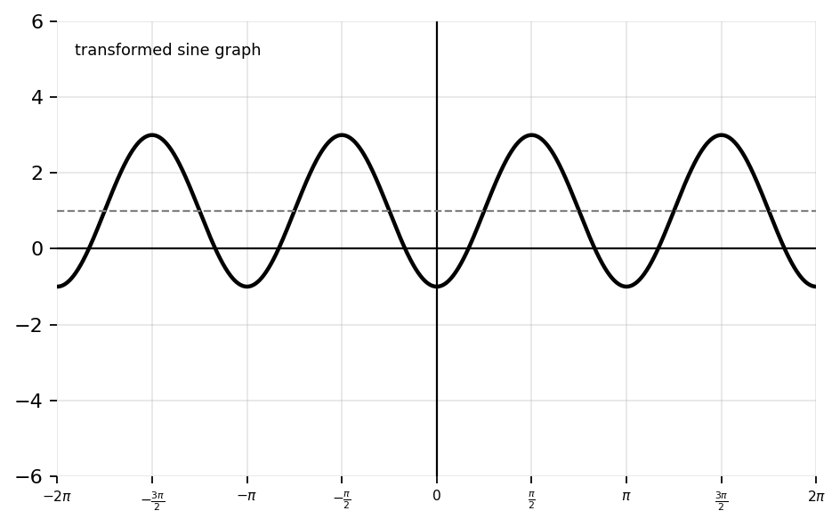
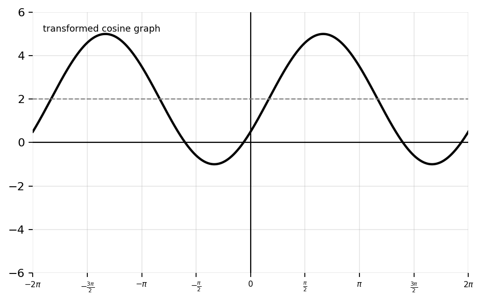
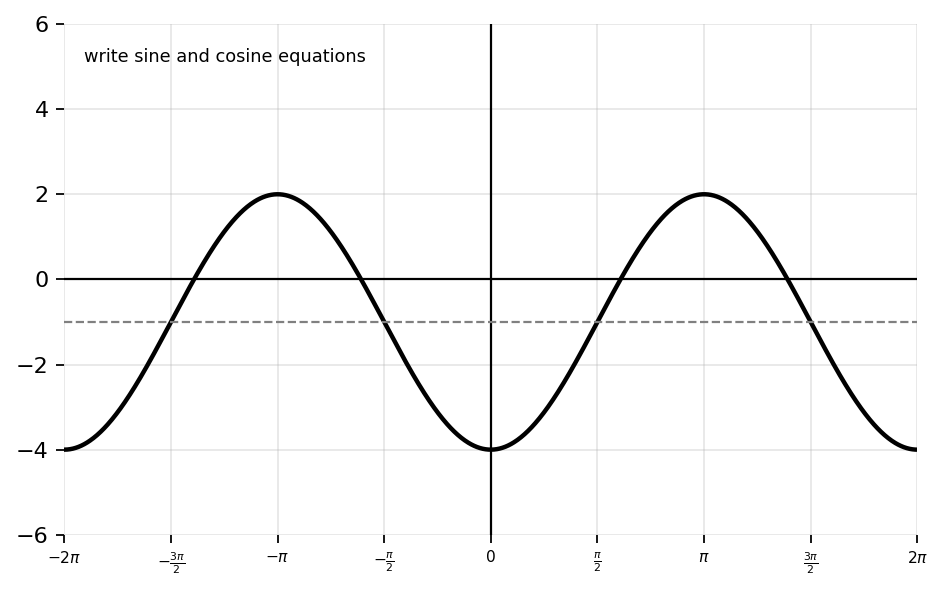
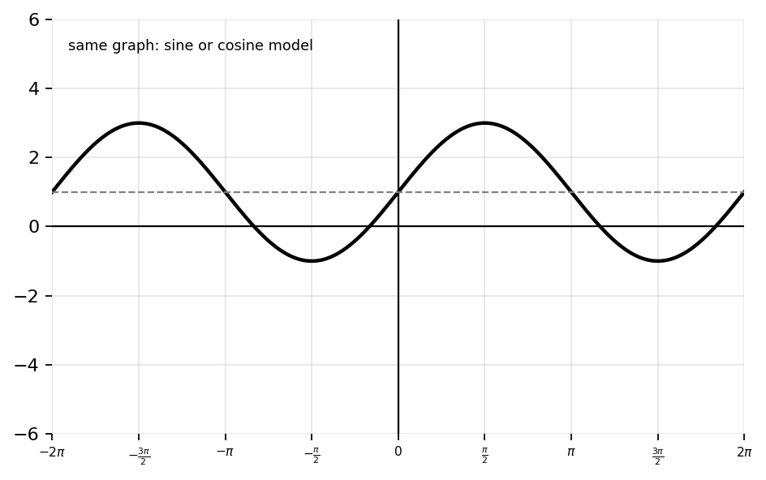
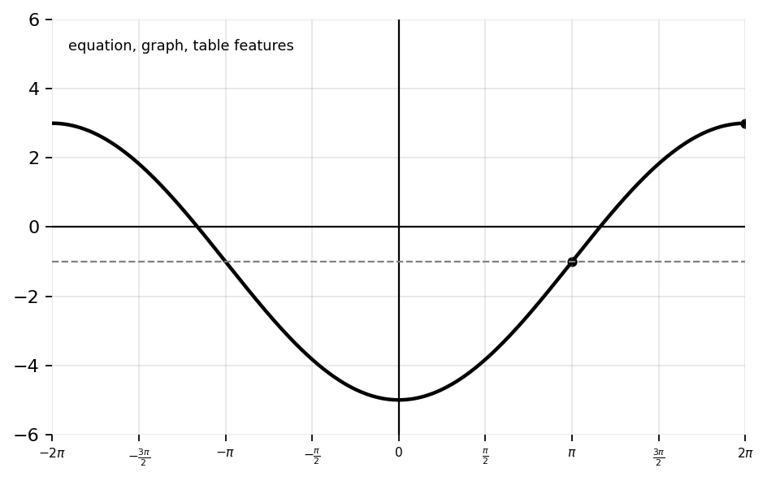
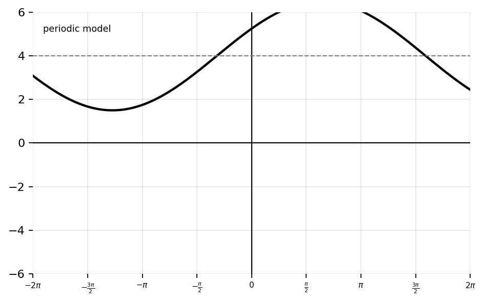

State the amplitude of \(y=3\sin(x)\).
State the period of \(y=\sin(x)\).
State the amplitude and period of \(y=2\cos(x)\).
State the vertical shift of \(y=\sin(x)-4\).
State the phase shift of \(y=\cos\left(x-\frac{\pi}{3}\right)\).
Identify the parent function.
Determine whether the graph is reflected across the \(x\)-axis.
State the midline of \(y=5\sin(x)+2\).
State the amplitude, period, and vertical shift of \(y=-3\cos(x)-5\).
Complete the five-point table for \(y=\sin(x)\) over one period.
| \(x\) | 0 | \(\frac{\pi}{2}\) | \(\pi\) | \(\frac{3\pi}{2}\) | \(2\pi\) |
|---|---|---|---|---|---|
| \(y\) |
Complete the five-point table for \(y=\cos(x)\) over one period.
| \(x\) | 0 | \(\frac{\pi}{2}\) | \(\pi\) | \(\frac{3\pi}{2}\) | \(2\pi\) |
|---|---|---|---|---|---|
| \(y\) |
Determine whether each description is usually modeled first with sine or cosine.
State whether the following functions have the same amplitude, same period, both, or neither.
Graph \(y=2\sin(x)\). State amplitude, period, midline, maximum, and minimum.
Graph \(y=-3\cos(x)\). Describe the reflection and vertical stretch.
Graph \(y=\sin(x)+4\). State the vertical shift and midline.
Graph \(y=\cos\left(x-\frac{\pi}{2}\right)\). State the phase shift and list the five key points for one period.
Graph \(y=2\sin(2x)\). State amplitude, period, interval length between key points, and five key points.
Graph \(y=-\cos\left(\frac{x}{2}\right)\). State the period and describe the reflection.
Graph \(y=3\cos(x+\pi)-1\). State amplitude, period, phase shift, vertical shift, and midline.
Use the five-point method to graph \(y=2\sin\left(x-\frac{\pi}{4}\right)+1\). Label the five key points.
Use the five-point method to graph \(y=-4\cos(2x)-3\). Label the five key points and the midline.
Write an equation for a sine graph with amplitude \(3\), period \(2\pi\), and vertical shift \(1\). Then identify the maximum and minimum values.
Write an equation for a cosine graph with amplitude \(2\), period \(\pi\), and reflection across the \(x\)-axis. Then state the value of \(B\) in \(y=a\cos(Bx)+d\).
A graph has maximum \(5\) and minimum \(-1\). Determine the amplitude and midline. Then write a possible sine equation with period \(2\pi\).
A graph completes one cycle over \(0\le x\le\pi\). Determine the period and the value of \(B\) in \(y=\sin(Bx)\).
Given the trig graph, determine amplitude, period, phase shift, vertical shift, maximum, and minimum.

Given the trig graph, write a possible equation in cosine form. Then explain how the graph shows the amplitude, period, shift, and reflection.

Explain how amplitude affects the graph of \(y=a\sin(x)\). Include what changes and what does not change.
Explain how the coefficient inside the function affects period. Compare \(\sin(x)\) and \(\sin(3x)\), and describe how many cycles occur on \(0\le x\le2\pi\).
A student says, “The graph of \(y=\sin(x-2)\) shifts left 2.” Explain the mistake and correct it.
Compare \(y=\sin(x)\) and \(y=\cos(x)\). Explain how the graphs are related using phase shift, unit-circle coordinates, and key points.
A student says, “Amplitude changes the period.” Use two equations and graph-feature reasoning to explain why this is false.
Analyze \(y=-2\sin\left(\frac{x}{2}\right)+3\). State amplitude, period, phase shift, vertical shift, midline, maxima/minima, and intervals of increase/decrease over one cycle.
Analyze \(y=4\cos(3x-\pi)-1\). Rewrite it to reveal the phase shift, then state amplitude, period, phase shift, vertical shift, midline, and maxima/minima.
Given the graph, write one sine equation and one cosine equation that model the graph. Justify why both equations produce the same curve.

Explain why \(y=\sin(x)\) and \(y=\cos\left(x-\frac{\pi}{2}\right)\) represent the same graph. Use both key points and phase-shift reasoning.
Compare \(y=\sin(x)\) and \(y=\sin(2x)\). Discuss period, zeros, horizontal compression, number of cycles, and symmetry.
A graph has amplitude \(5\), midline \(y=-2\), and period \(4\pi\). Write a possible sine equation and a possible cosine equation. Justify both choices.
Explain how the five-point method helps graph sinusoidal functions efficiently. Use \(y=-3\cos(2x)+1\) as an example and describe how each key point is transformed.
Create a sine function with amplitude \(4\), period \(\pi\), phase shift right \(\frac{\pi}{2}\), and vertical shift down \(3\). Write the equation in transformed form, determine the five key points for one full cycle, and explain how each parameter affects the graph.
Create a cosine graph whose maximum is \(7\), minimum is \(-1\), and period is \(2\pi\). Write the equation, identify the amplitude and midline from the max/min values, and justify how the graph matches every condition.
Design an error-analysis problem involving phase shift for \(y=2\sin(3x-\pi)+1\).
Use the graph shown to create two equations that model the same curve: one in sine form and one in cosine form. Then explain why both equations work by comparing starting point, phase shift, midline, and maximum/minimum values.

Design a real-world periodic situation involving temperature, tides, breathing, or circular motion. The situation must have amplitude \(6\), period \(12\), and midline \(20\). Write a sinusoidal model, interpret each parameter in context, and explain what one full cycle represents.
Create a challenge problem involving a transformed sine or cosine graph with amplitude \(3\), vertical shift \(-2\), period \(\frac{2\pi}{5}\), and a nonzero phase shift. Ask students to graph two cycles, write the five key points for one cycle, and identify all maxima and minima shown.
Create a comparison task involving \(y=\sin(x)\) and \(y=\cos(x)\). Require students to compare phase shift, symmetry, zeros, maxima, minima, and unit-circle meaning. Include at least one prompt asking students to explain why cosine can be written as a shifted sine function.
Create a multi-representation problem using the graph shown. Include the equation \(y=4\sin\left(\frac12(x-\pi)\right)-1\), a table of key values, and the graph. Require students to determine amplitude, period, phase shift, vertical shift, maxima/minima, and explain how the table and graph agree.

A student claims, “Graphing trig functions is just memorizing shapes.” Critique this statement using transformations, periodic behavior, unit-circle reasoning, and graph structure. Include at least two equations in your response to support the critique.
Create a modeling problem where a sinusoidal function describes daylight hours over a year, tide height, sound waves, or circular motion. Your task must include a graph, a model equation, interpretation of amplitude/period/midline/phase shift, a prediction using the model, and a justification of whether the prediction is reasonable.
